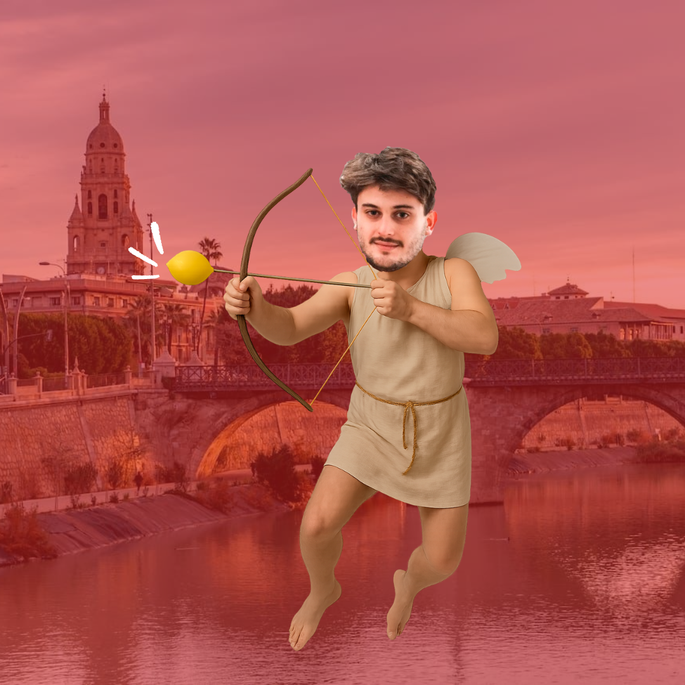
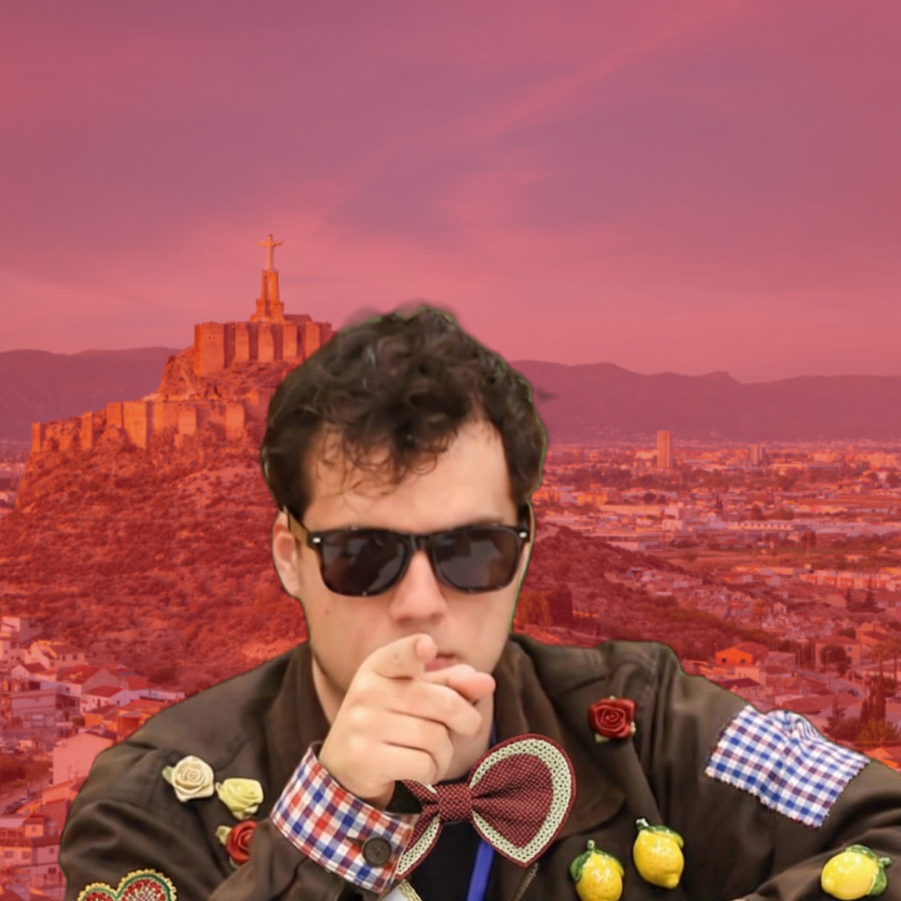
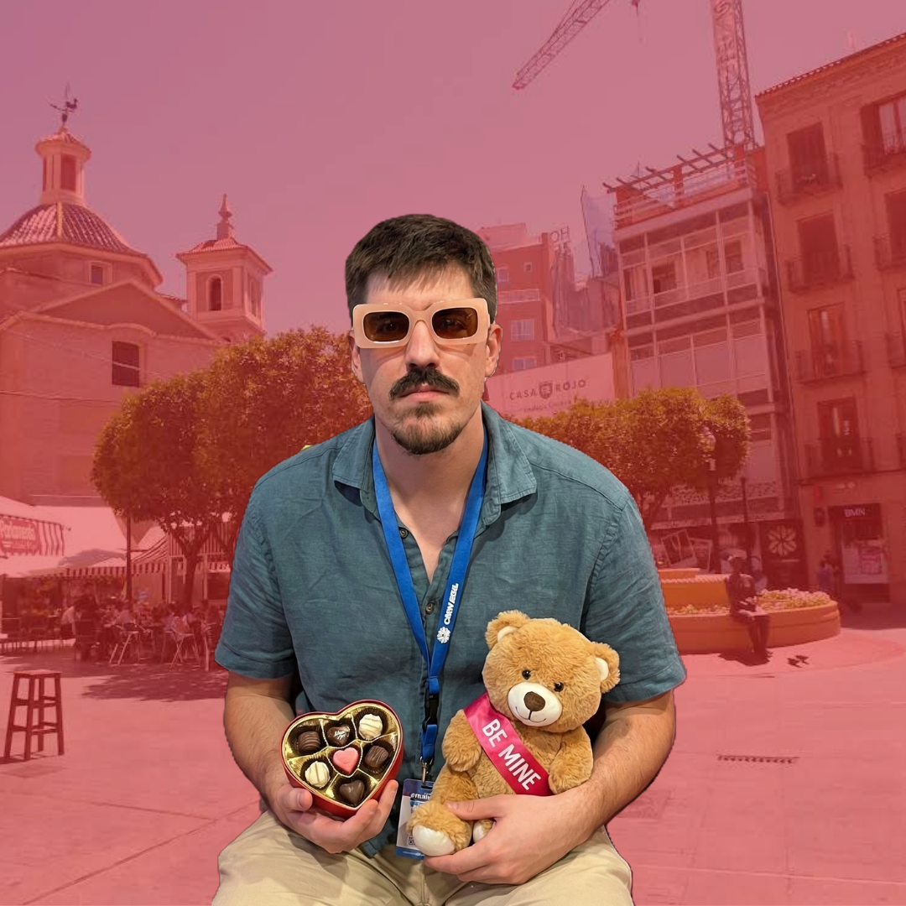
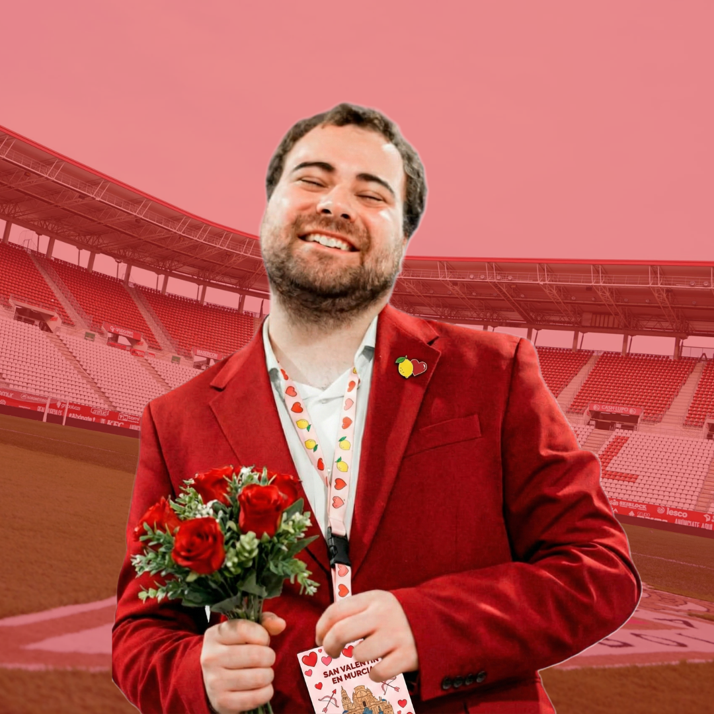
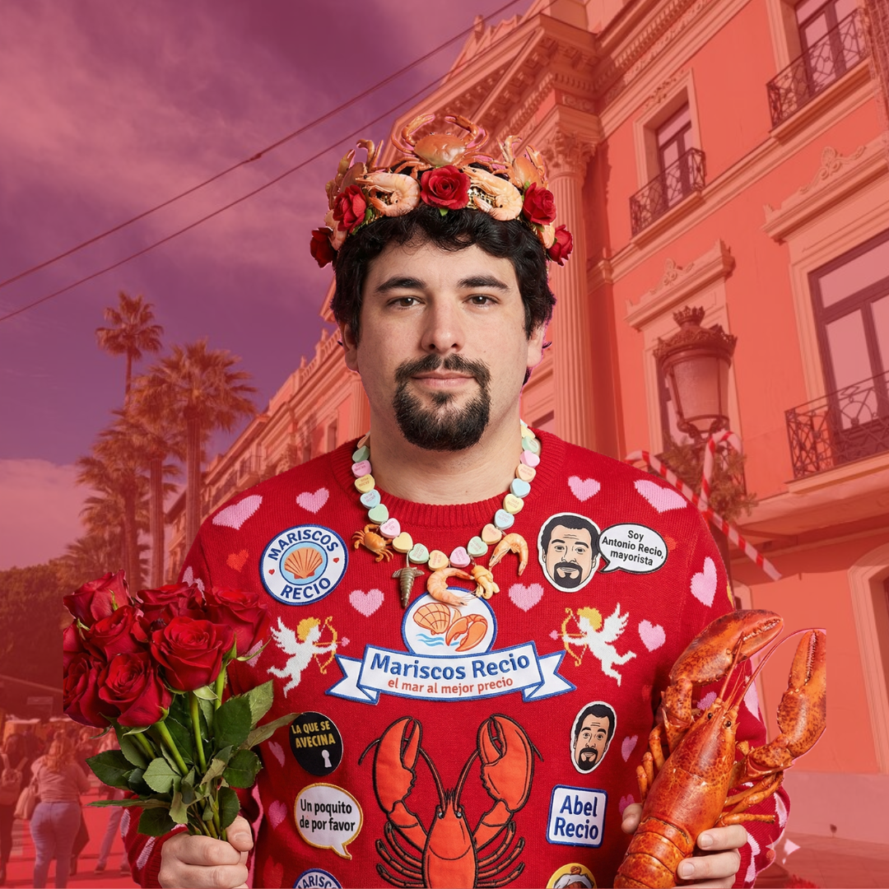
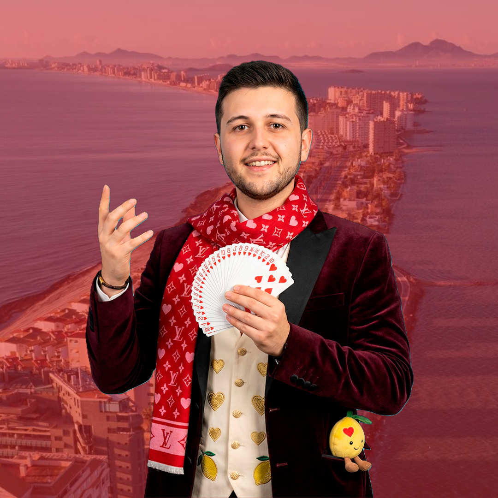

Amadeo
Gavilano
Ha adjudicado más aquí que en Madrid
Torneo de Debate BP • 2026
Hay pocas formas mejores de pasar San Valentín...
Obligatorio si quieres acudir
Recordamos que es obligatorio registrar una incompatibilidad

Ha adjudicado más aquí que en Madrid
Con ella no van a haber fallos en los ballots

Nos daba fomo ser el único torneo que no adjudique este año

Ha hecho cosillas en debate
Venid a Murcia. Calidad Ga-rantizada

Sabe distinguir entre Mojito y Caipirinha
Departamento de Comedia & Buen Rollo

Ministro de la Risa
"No tiene nada que ver con Antonio Recio, o eso dice..."

Mentalista del Humor
"Lo mismo te saca un conejo del sombrero que te tira tu caso con un chiste malo."
Resultados y enfrentamientos en tiempo real vía Tabbycat.